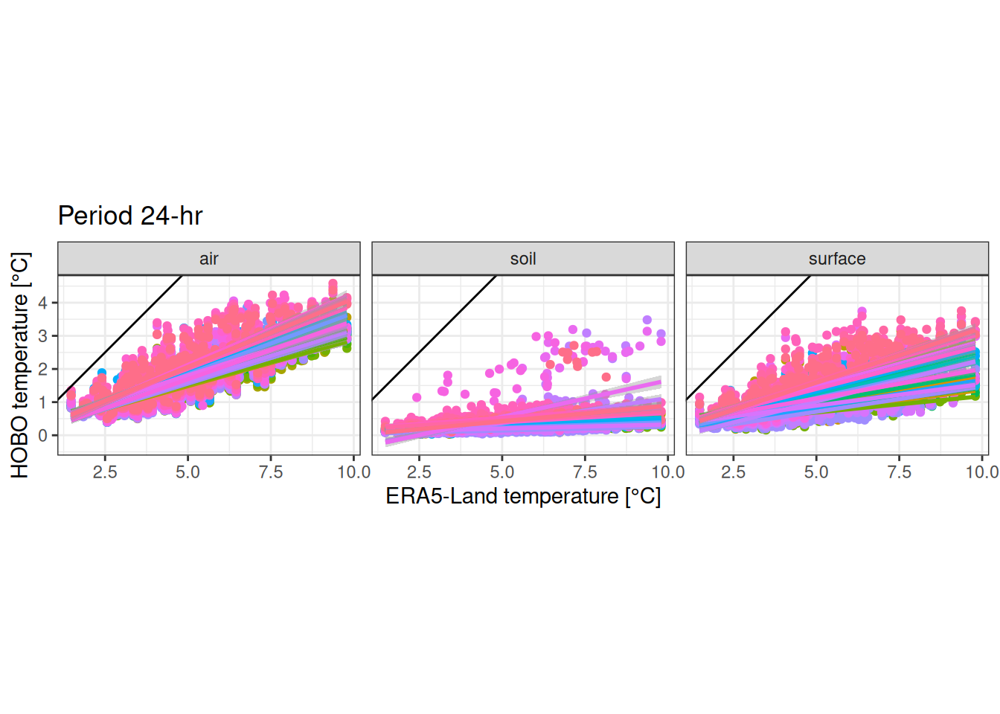
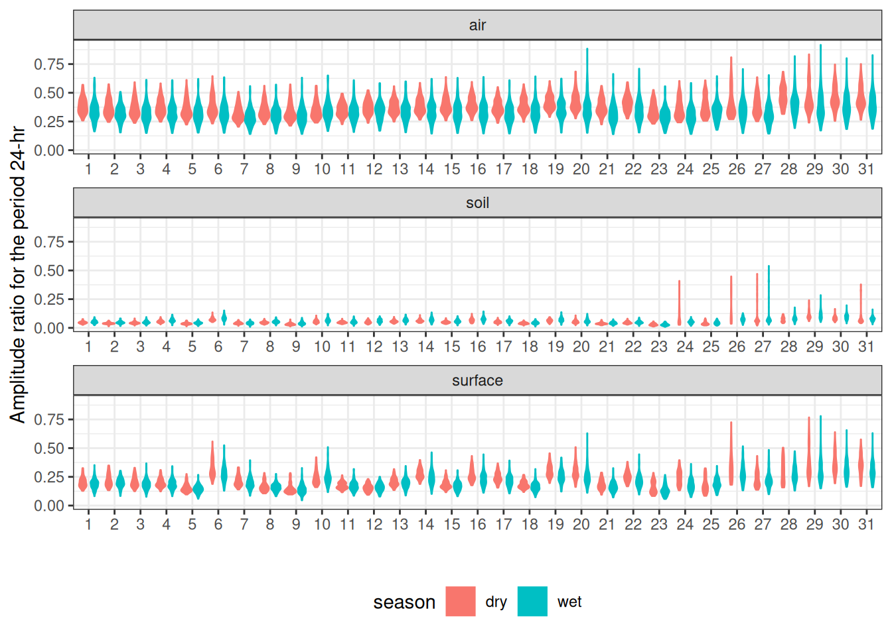
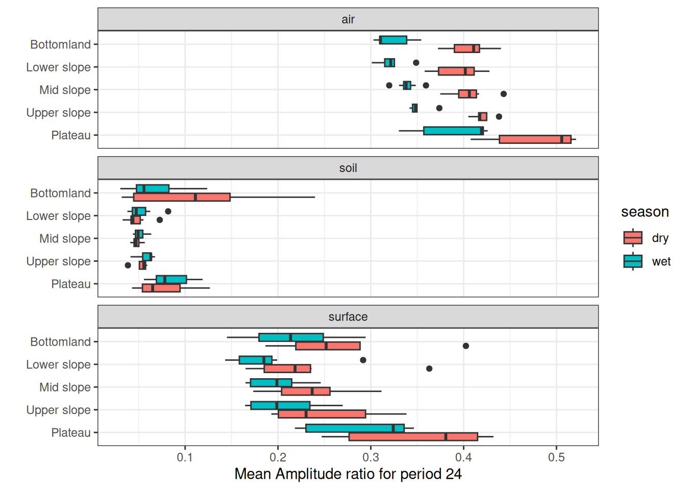
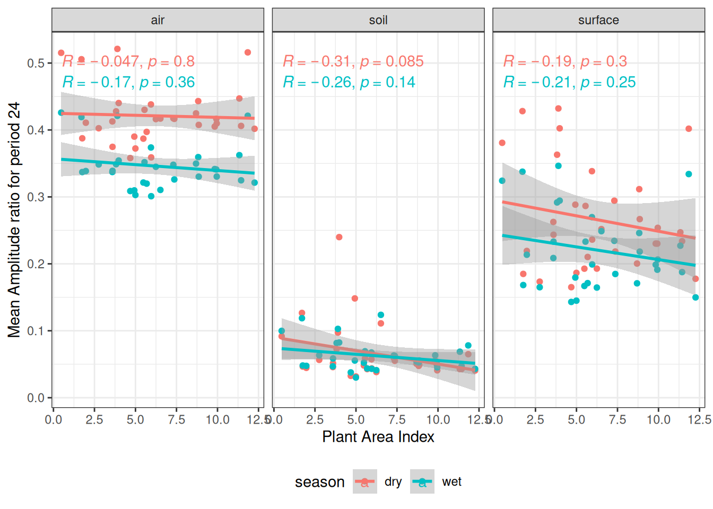
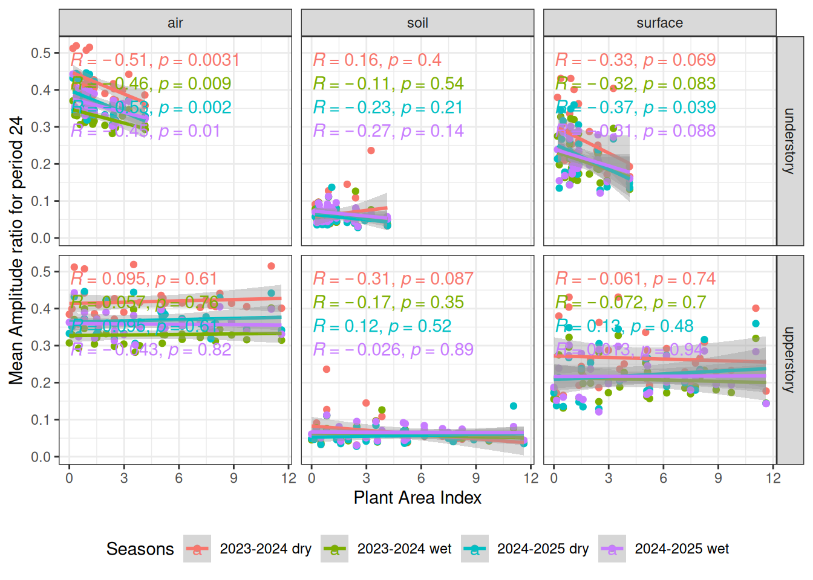
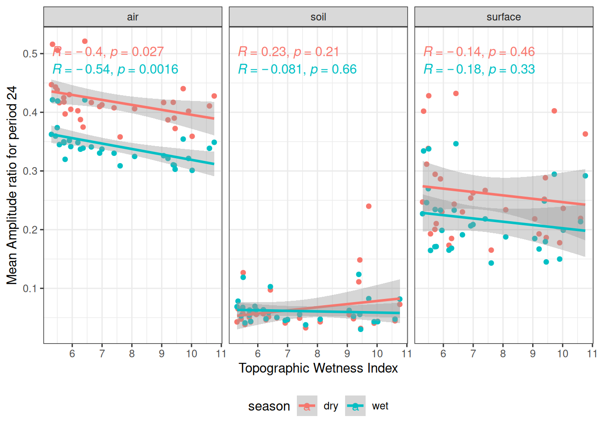

The power similarly increases during the dry season. Interestingly we can see that the approach is pretty resilient to unfiltered data even if we can easily detect anomalies in soil power due to captors removed from the soil (💡we may want to filter them later).
Power for period 24-hr variation across time and seasons.
Decomposition 3-months
For comparison, we used a power spectrum to compare our five-day Fourier transform decomposition with a 90-day decomposition using a sliding window of 45 days. Interestingly, we found a very similar spectrum with similar values for the 24 harmonics.
Power spectrums across captors comparing 5-days and 3-months windows. Shown period have been filtered to the 5-days spectrum above 6.
Total power
We quickly compared the total power of each microclimate type with that of the macroclimate, highlighting the dissipation effect of the microclimate, which increases from the air to the soil.
Total power of macroclimate and microclimate across air, surface and soil captors. Boxplots represent the temporal variation across 5-day windows and spatial variation across plots and forests.
Buffer
Comparing HOBO power against ERA5-Land power for the period 24hr we see mainly a buffer effect with decreased amplitude.
Code
read_tsv("data/derived_data/fc_all.tsv") %>%mutate(date =as_date(datetime)) %>%left_join(era_f) %>%filter(!is.na(power_era)) %>%filter(period ==24) %>%ggplot(aes(power_era, power, col =as.factor(id))) +geom_point() +geom_smooth(method ="lm", formula ="y ~ x") +theme_bw() +xlab("ERA5-Land temperature [°C]") +ylab("HOBO temperature [°C]") +coord_equal() +theme(legend.position ="bottom") +ggtitle("Period 24-hr") +facet_wrap(~ type) +scale_color_discrete(guide ="none") +geom_abline()

HOBO power against ERA5-Land power for the period 24hr.
The buffer ratio is stronger for soil, then surface and finally air, and stronger in the wet than the dry season.
Code
read_tsv("data/derived_data/fc_all.tsv") %>%mutate(date =as_date(datetime)) %>%left_join(era_f) %>%filter(!is.na(power_era)) %>%filter(period ==24) %>%mutate(ratio = power/power_era) %>%mutate(season =ifelse(month(date) %in%8:11, "dry", "wet")) %>%ggplot(aes(as.factor(id), ratio, fill = season, col = season)) +geom_violin() +facet_wrap(~ type, nrow =3, scales ="free_x") +theme_bw() +ylab("Amplitude ratio for the period 24-hr") +xlab("") +theme(legend.position ="bottom")

Amplitude ratio for the period 24-hr per sensor season and type.
Qualitative descriptors
As expected the buffer ratio is stronger for closed understory than forest gaps with gap borders having intermediate values. This is more marked in wet season and in the air than the soil.
Amplitude ratio for the period 24-hr per light position (closed understory or forest gaps).
Similarly the buffer ratio is stronger in bottomlands than plateaus, but even stronger in slopes, especially in wet season and air.
Code
read_tsv("data/derived_data/coords.tsv") %>%select(id, topography) %>%mutate(topography =factor(topography, levels =c("Plateau", "Upper slope","Mid slope", "Lower slope","Bottomland"))) %>%left_join(ratios) %>%ggplot(aes(topography, ratio, fill = season)) +geom_boxplot() +facet_wrap(~ type, nrow =3) +theme_bw() +coord_flip() +ylab("Mean Amplitude ratio for period 24") +xlab("")

Amplitude ratio for the period 24-hr per topographic position.
Spatial descriptors
However, the buffer ratio did not correlated strongly to total plant area index. ⚠️ Its computation should be checked and compared to the field categories.
Code
pad <-read_tsv("data/derived_data/sensors_pad_xy.tsv") %>%rename(x = x_p, y = y_p) %>%left_join(read_tsv("data/derived_data/pad.tsv")) %>%group_by(id, z) %>%summarise(pad =median(pad)) %>%group_by(id) %>%summarise(pad =sum(pad))ratios %>%left_join(pad) %>%ggplot(aes(pad, ratio, col = season)) +geom_point() +theme_bw() +geom_smooth(method ="lm") + ggpubr::stat_cor() +theme(legend.position ="bottom") +xlab("Plant Area Index") +ylab("Mean Amplitude ratio for period 24") +facet_wrap(~ type)

Amplitude ratio for the period 24-hr along plant area index.
Code
pad <-read_tsv("data/derived_data/sensors_pad_xy.tsv") %>%rename(x = x_p, y = y_p) %>%left_join(read_tsv("data/derived_data/pad.tsv")) %>%group_by(id, h) %>%summarise(pad =median(pad)) %>%mutate(strata =ifelse(h <10, "understory", "upperstory")) %>%group_by(id, strata) %>%summarise(pad =sum(pad))ratios %>%left_join(pad) %>%ggplot(aes(pad, ratio, col = season)) +geom_point() +theme_bw() +geom_smooth(method ="lm") + ggpubr::stat_cor() +theme(legend.position ="bottom") +xlab("Plant Area Index") +ylab("Mean Amplitude ratio for period 24") +facet_grid(strata ~ type)

Amplitude ratio for the period 24-hr along plant area index and strata.
Finally, the buffer ratio moderately correlated to the topographic wetness index with stronger buffer in bottomlands as suggested by qualitative analyses. 💡 However, topography correlates with soil water content, chemistry and pedology that should be investigated as well.
Code
topo <-read_tsv("data/derived_data/coords.tsv") %>%mutate(twi =extract(rast("data/raw_data/topo/Paracou_ALT_TWI_5m.tif"),read_tsv("data/derived_data/coords.tsv")[2:3])$Paracou_TWI_5m) %>%select(id, twi)ratios %>%left_join(topo) %>%ggplot(aes(twi, ratio, col = season)) +geom_point() +theme_bw() +geom_smooth(method ="lm") + ggpubr::stat_cor() +theme(legend.position ="bottom") +xlab("Topographic Wetness Index") +ylab("Mean Amplitude ratio for period 24") +facet_wrap(~ type)

Amplitude ratio for the period 24-hr per light position (closed understory or forest gaps).
Temporal descriptors
We used the Guyaflux tower to explore the temporal characteristics of the microclimate buffer. These characteristics included the daily mean relative humidity at 55 m, the daily total precipitation, the daily mean net solar radiation and the season (factor). Although they are clearly suffering from collinearity, we quickly explored the response of the buffer to each factor independently and together in a linear model. As expected, the buffer showed a strong response to season, with a lower buffer in the wet season. However, it also responded linearly to relative humidity and precipitation: less water in precipitation or in the atmosphere resulted in a better microclimate buffer.
💡 We should test it with VPD and cumulated precipitation on a window and select the model with the best explanatory power.
Response of the microclimate buffer to each factor independently: daily mean relative humidity at 55 m (hr55), the daily total precipitation (pr), the daily mean net solar radiation (snet).